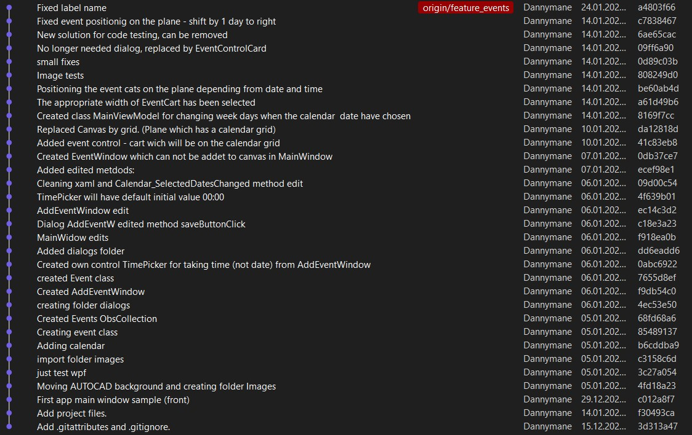

Event scheduler -
WPF project
This desktop application is a user-friendly calendar application designed to help you manage your schedule with ease. Project from scratch.
I invite you to evaluate my commits on this project.
Application Characteristics:
- Choosing the date on calendar will chose the dates and events on main field.
- Main field consists of events.
- The size of events depends on the events duration.
- The position of events depends on the start time and date.

My colleague tried to improve the appearance in "visual" branch. But in "master" there is only my work.
Also i attached a documentation with short code review, but in Polish.
I didn't follow any tutorial to create this project. I used the knowledge I gained during my studies. You can download and see the code.